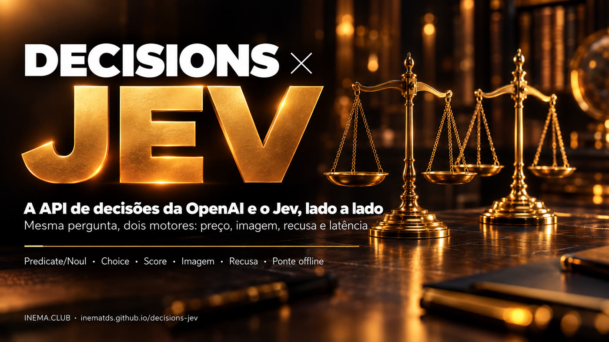

Mesma pergunta, dois motores. Veja o que muda em tipos de pergunta, imagem, recusa, preço e latência — e converta suas requisições de um formato para o outro sem reescrever nada.

A OpenAI lançou a Decisions API: você manda um texto ou uma foto com perguntas fechadas e recebe só a resposta — sim/não, uma opção da sua lista ou uma nota — com a probabilidade, sem texto corrido. É a mesma ideia do Jev, o modelo de decisão que o INEMA já estuda. Este projeto explica as diferenças com a fonte de cada informação e traz uma ponte em Python que converte as perguntas de um formato para o outro e compara as respostas. Para estudar basta ler e rodar a demonstração offline; para chamar as APIs de verdade, você precisa das suas chaves.
Um modelo de decisão não escreve: escolhe. Seu sistema faz a pergunta, define as opções válidas e recebe uma resposta pronta para usar em código — e uma probabilidade para saber quando chamar uma pessoa.
Cada linha diz de onde veio: documentação oficial da OpenAI, o código do projeto Jev ou o que os autores de dois vídeos mediram. Nada é apresentado como medição nossa.
Converte a requisição de um formato para o outro (noul ↔ predicate, criteria ↔ choices/levels) e normaliza as duas respostas num formato só.
Três casos fictícios com respostas simuladas rodam sem chave nem custo; 12 testes garantem a conversão. O modo ao vivo só roda quando você autoriza.
Os dois respondem às mesmas três formas de perguntar. As diferenças estão na entrada, na recusa e no preço.
| OpenAI Decisions API | Jev (TypeSafe) | |
|---|---|---|
| Sim ou não | predicate → probabilidade de 0 a 1 | noul → probabilidade de 0 a 1 |
| Uma opção da lista | choice + choices, com confidence | choice + criteria, com confidence |
| Nota numa escala | score + levels (índice a partir de 0) | score + criteria em lista |
| Entrada | Texto e imagem (só base64) | Só texto |
| Recusa | Pode responder refusal | Sempre escolhe entre as opções |
| Modelo | gpt-6-luna (único) | ~typesafe/jev-latest |
| Preço (entrada) | US$ 0,10 por 1M tokens, sem cobrança de saída | US$ 0,042 por 1M tokens |
| Situação | Beta pública desde 06/10/2026 | Disponível, sem lista de espera |
Fontes: guia oficial da OpenAI (developers.openai.com/api/docs/guides/decisions) e o projeto inematds/jev. Detalhes em docs/comparacao.md.
Dois criadores testaram as APIs logo no lançamento. Os números abaixo são deles, com poucas perguntas e fáceis — servem de indício, não de benchmark.
O Jev saiu cerca de 58% mais barato por token de entrada; no teste de incidentes, o custo total ficou perto da metade.
Média de 146 ms (OpenAI) contra 155 ms (Jev); a mediana ficou levemente melhor no Jev. Num teste de integração, uma chamada levou ~300 ms, o dobro do anunciado.
Empate: os dois acertaram tudo nos testes dos autores. Com fotos, a OpenAI separou produto danificado, intacto e caixa fechada.
Fontes: vídeo "OpenAI's Decisions API just dropped. Here's how it compares to Jev" e um segundo vídeo, em espanhol, que integrou a API numa triagem de clínica veterinária (recebido só como transcrição).
A ponte traduz as perguntas, chama cada provedor no formato dele e devolve as respostas lado a lado, com alerta de revisão quando a confiança é baixa ou houve recusa.
A ponte usa só a biblioteca padrão do Python. Chaves só são necessárias no modo ao vivo.
Nenhuma dependência para instalar.
git clone https://github.com/inematds/decisions-jev.git cd decisions-jev
Só para o modo ao vivo. Criada na plataforma da OpenAI; cobrada à parte de qualquer assinatura.
export OPENAI_API_KEY=...Só para o modo ao vivo, para chamar o Jev pelo OpenRouter.
export OPENROUTER_API_KEY=...Comece offline. Só chame as APIs quando a pergunta estiver bem formulada.
Três casos fictícios — plantão pet, incidente de checkout e uma recusa — com respostas simuladas. Mostra o formato da comparação, sem chave e sem custo.
python3 -m ponte demo
A ponte transforma noul em predicate, criteria em choices ou levels, e o nome de cada pergunta em name.
python3 -m ponte converter jev-openai exemplos/plantao-pet.jev.json
A imagem vira data URL base64 dentro da mensagem. No sentido contrário, a ponte avisa que o Jev vai receber só o texto.
python3 -m ponte converter jev-openai exemplos/plantao-pet.jev.json --imagem foto.jpg python3 -m ponte converter openai-jev exemplos/devolucao-foto.openai.json # avisa: 1 imagem descartada
Chama os dois provedores com a mesma pergunta e mostra respostas, latência e custo. Exige PERMITIR_API=1 para não gastar por engano. Este modo ainda não foi executado pelo INEMA.
PERMITIR_API=1 python3 -m ponte ao-vivo exemplos/plantao-pet.jev.json
O prompt pronto manda o agente ler a documentação oficial em Markdown antes de codar, fazer as perguntas numa única chamada, marcar confiança abaixo de 0,6 como "revisar" e tratar a recusa sem quebrar.
# copie o bloco de texto de
docs/prompt-integracao.md
12 testes cobrem conversão nos dois sentidos, ida e volta, imagem, recusa, revisão e o bloqueio do modo ao vivo.
python3 -m unittest discover -s testes
Para uma pessoa esperando, alguns milissegundos não fazem diferença. Pesam a entrada, o volume e o que fazer com a dúvida.
Decisions API. Foto de produto, de ferimento ou print entram na mesma chamada. O Jev ainda só lê texto.
Jev. O preço de entrada é menos da metade; em milhões de registros, a diferença aparece na conta.
A OpenAI pode recusar com refusal. No Jev, inclua uma opção "insuficiente". Nos dois, recusa ou confiança baixa vai para uma pessoa.
O que já existe e o que falta medir.